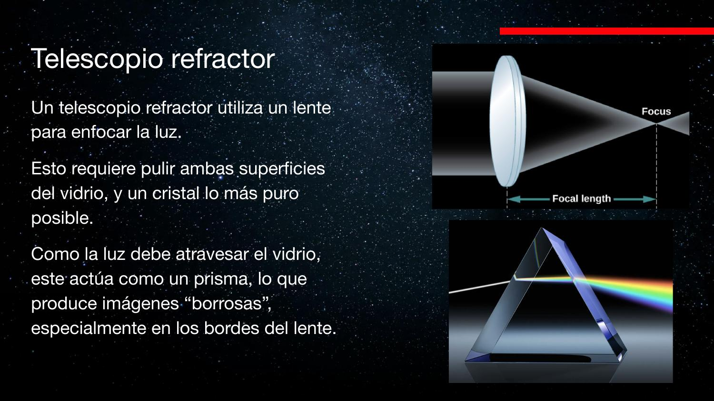
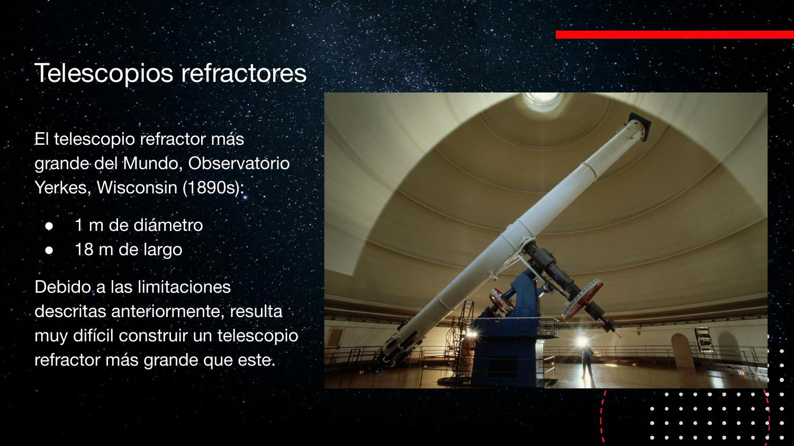
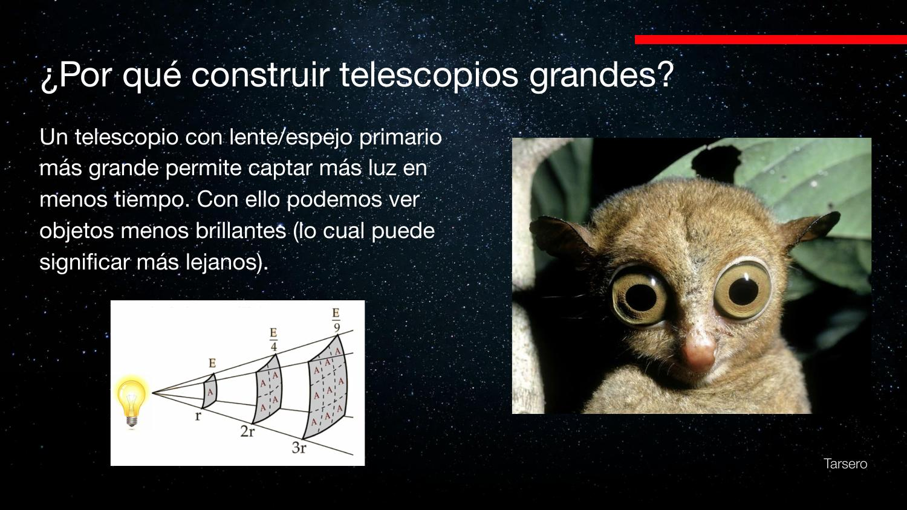
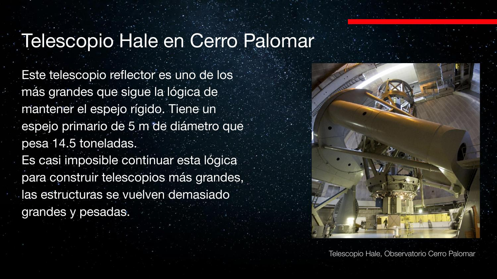
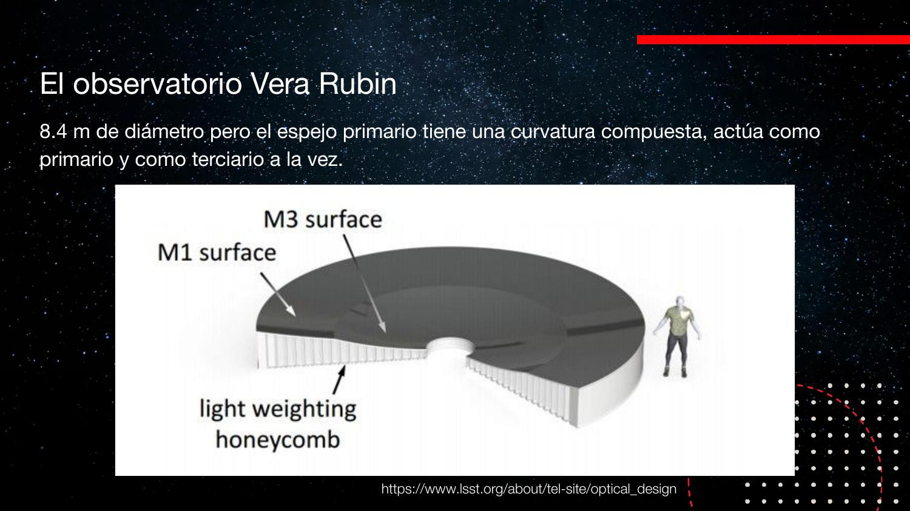
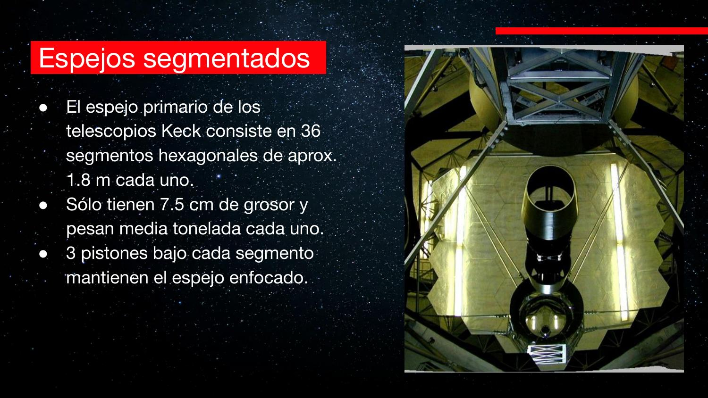
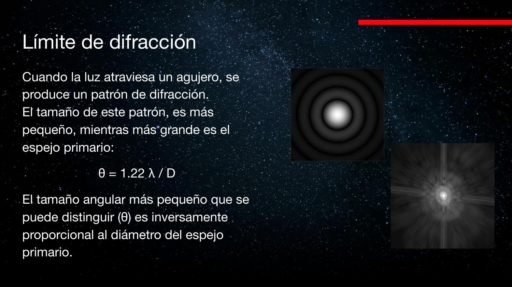
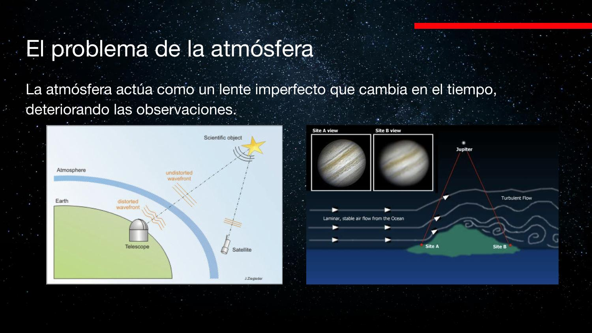

Telescopios: doblar la luz
Del lente de Galileo a los espejos segmentados de 40 metros: la historia de los telescopios es la historia de las tecnologías que permiten recolectar y concentrar cada vez más luz — y de los límites físicos que hubo que vencer en cada paso.
Un telescopio no es un aparato para «acercar» cosas: es un embudo de luz. Esta clase recorre el aparato que recolecta y concentra la luz — no el detector, que viene en la clase 2 — y las cinco revoluciones tecnológicas que permitieron pasar de lentes de 1 metro a espejos de 40: reflectores, óptica activa, espejos centrifugados, segmentación y óptica adaptativa.
Las tres partes de un instrumento astronómico
Antes de entrar en detalles conviene separar el sistema completo en bloques.
Todo instrumento astronómico moderno se puede descomponer en tres etapas:
- El telescopio: recolecta la luz y la concentra en un área pequeña. Es el «embudo». De esto trata la clase de hoy.
- El instrumento: filtra o separa la luz en componentes (filtros, espectrógrafos, óptica interna).
- El detector: registra la señal. Históricamente el ojo; hoy, detectores CCD y similares (clase 2).
Es un pipeline de adquisición de señal: antena/colector → etapa de acondicionamiento → ADC. Cada bloque aporta su propia función de transferencia y su propio ruido, y el diseño de cada uno condiciona a los demás. Esta clase es sobre la «antena».
El profesor mostró el telescopio histórico de Cerro Calán (en el audio la transcripción lo llama «Heidegger»; se refiere al telescopio Heyde del Observatorio Astronómico Nacional), donde el detector era simplemente el ojo del observador puesto en el foco.
Refractores: el diseño de Galileo
Galileo fue el primero en apuntar un telescopio al cielo. Su diseño usa lentes: un telescopio refractor.
En un refractor, un lente objetivo a la entrada curva la luz por refracción y la concentra hacia un foco; un segundo lente (ocular) vuelve a paralelizar los rayos para que el ojo reciba la imagen. El diseño es conceptualmente simple: basta la curvatura correcta y un tubo suficientemente largo para que la luz converja.

El audio dice repetidamente que los lentes funcionan «utilizando la difracción de la luz». El fenómeno que curva la luz en un lente es la refracción (cambio de dirección al cambiar de medio). La difracción es otra cosa y aparece más adelante, en el límite de resolución (§11).
Los límites del lente
Pureza, pulido, peso y arcoíris: cuatro problemas que acotaron el tamaño de los refractores.
Material y sujeción
- La luz atraviesa el lente: el cristal debe ser extremadamente puro y estar pulido con alta precisión por ambas caras.
- El lente solo puede sujetarse por los bordes (por el centro pasa la luz). Un vidrio grande sujeto solo por el borde vibra y se flecta; para evitarlo hay que hacerlo más grueso — y por lo tanto más pesado. Eso limita el tamaño máximo.
Aberración cromática: los arcoíris
El vidrio refracta distinto a cada longitud de onda, igual que un prisma: la luz blanca que entra sale separada en colores. El efecto es peor en los bordes del lente (mayor ángulo), así que las imágenes de refractores se ven bien al centro y con pequeños arcoíris hacia los bordes. Para mitigarlo se alarga el largo focal: concentrar la luz «más suavemente» reduce la dispersión cromática — de ahí los tubos kilométricos de la época.

El efecto no es historia antigua: la misión Gaia, midiendo movimientos propios de estrellas en Andrómeda con precisión de microsegundos de arco, debe corregir el corrimiento diferencial entre objetos rojos y azules dentro de su propia óptica — el mismo fenómeno cromático, en un telescopio espacial moderno. Todo instrumento tiene lentes en alguna parte del camino óptico.
Los gigantes refractores
- Herschel (1785): ~1,2 m de diámetro y 12 m de largo focal. Tan artesanal y peligroso que lo obligaron a desarmarlo.
- Yerkes, Wisconsin (1890s): 1 m de diámetro y 18 m de largo — el refractor más grande jamás construido. Como se miraba por el ocular, el piso completo de la cúpula sube y baja para seguir el extremo del tubo.

El observatorio Lick (California) tiene un refractor del mismo tipo. James Lick, millonario excéntrico, quería una pirámide funeraria; unos astrónomos lo convencieron de financiar un observatorio… y terminó enterrado bajo el piso móvil del telescopio, cerca de lo que hoy es Silicon Valley. La cúpula vacía de Cerro Calán estaba diseñada para un telescopio de este tipo, con piso móvil, que nunca llegó.
¿Por qué telescopios grandes?
Porque la luz se diluye con el cuadrado de la distancia, y la única defensa es un área colectora mayor.
La luz de una fuente se reparte sobre una esfera cuya área crece como \(d^2\). El flujo que recibimos cae entonces como el inverso del cuadrado:
El área colectora escala como \(D^2\): duplicar el diámetro cuadruplica la luz recolectada por segundo. La evolución ya lo descubrió: el tarsero, primate nocturno de la diapositiva, tiene ojos gigantes para «recolectar mucha luz en poco tiempo» en la selva oscura.

Reflectores: la idea de Newton
Sustituir el lente por un espejo curvo resuelve de un golpe casi todos los problemas del refractor.
En un telescopio reflector la luz entra por el tubo abierto y rebota en un espejo primario curvado que la concentra. Como el observador no puede poner la cabeza en el camino de la luz, hay dos soluciones clásicas para extraer el foco:
- Montura newtoniana: un espejo plano inclinado desvía el haz hacia un costado del tubo.
- Montura Cassegrain: un espejo secundario devuelve la luz hacia atrás, a través de un orificio central del primario, donde se montan los instrumentos.
Las ventajas son decisivas:
- El espejo se puede apoyar por atrás y por los lados, no solo por el borde: estructuras mucho más rígidas.
- La luz no atraviesa el vidrio: la pureza interna del material deja de importar (solo el pulido y la capa reflectante) y no hay aberración cromática del primario.
- El camino óptico se pliega con rebotes: tubos más cortos para el mismo largo focal.
- Al estar apoyado por atrás, la forma del espejo se puede corregir empujándolo — la semilla de la óptica activa (§7).
El secundario bloquea algo de luz, pero es un obstáculo pequeño comparado con el área del primario: en la práctica no se nota (aunque sus soportes generan los picos de difracción que se ven en las estrellas de las fotos astronómicas).

Recubrimientos y el límite del espejo rígido
Una película de metal de átomos de espesor, y un tope estructural en los 5 metros.
La capa reflectante
La superficie del espejo se recubre con un metal: aluminio o plata para el óptico; oro para el infrarrojo (por eso el James Webb es dorado — el oro refleja mejor a λ largas). La capa tiene apenas 2–3 átomos de espesor. Se aplica en una cámara de vacío del tamaño del espejo: filamentos del metal se evaporan con una descarga eléctrica enorme y la «nube» metálica se deposita homogéneamente sobre el vidrio — el mismo principio con que se metalizan los envoltorios de papas fritas.
Du Pont, Hale y el tope de la rigidez
- Du Pont (Las Campanas): 2,5 m — casi el diámetro del Hubble (2,4 m). El armatoste que lo mantiene rígido y lo mueve es del tamaño de un edificio: la estructura pesa mucho más que el espejo.
- Hale (Monte Palomar): 5 m y ~14,5 toneladas solo el primario. Es el telescopio más grande construido con la lógica de «mantener el espejo rígido a toda costa». En Chile, el mayor de esta generación es el Blanco (Tololo), de 4 m.
Más allá de 5 m no existe material suficientemente rígido y liviano: cada metro extra multiplica el peso del espejo, de la celda que lo sostiene y del mecanismo que mueve todo. El problema dejó de ser óptico y pasó a ser de ingeniería estructural y de materiales.

Óptica activa: dejar que se doble (y corregirlo)
El cambio de paradigma: espejos delgados y flexibles cuya forma se corrige continuamente con pistones.
Para superar los 5 m hubo que rendirse: es imposible mantener el espejo rígido; dejemos que se curve y corrijamos la curvatura. El espejo se hace delgado (el de Gemini, de 8 m, tiene solo ~20 cm de grosor) y por detrás se instalan actuadores (pistones) — unos 120 en Gemini — que restauran la forma correcta a medida que el telescopio apunta en distintas direcciones.
- Si Gemini se hubiese construido con la lógica de Hale, pesaría 2,6 veces más; con óptica activa quedó en ~1,7× el peso de un telescopio mucho menor.
- El sistema monitorea una estrella de referencia en el borde del campo: si el punto se «desparrama» o se alarga, se recalculan las posiciones de los pistones. El ciclo de corrección es del orden de 1 minuto.
- Con esta tecnología funcionan los telescopios de 6–8 m actuales: VLT (4×8,2 m), Gemini (8 m) y los Magallanes Baade y Clay (6,5 m, Las Campanas).

Los Magallanes usan una montura de semicírculos sobre un piso giratorio, flotando sobre una película de aceite a presión que reduce la fricción al mínimo: con el bombeo activo, un telescopio de cientos de toneladas se puede empujar a mano.
Óptica activa corrige la deformación del espejo (gravedad, temperatura) en escalas de ~1 minuto. La óptica adaptativa (§12) corrige la atmósfera, cientos de veces por segundo y en otro espejo más pequeño. Nombres parecidos, problemas distintos.
Cómo se funde un espejo gigante
Un horno giratorio bajo un estadio de fútbol americano: la curvatura se obtiene por rotación.
Los grandes espejos monolíticos se fabrican en el Mirror Lab de la Universidad de Arizona, construido bajo el estadio de fútbol americano del campus. El proceso:
- Se cargan a mano pedazos de vidrio sobre un molde con estructura de panal de abeja (el espejo final es hueco por dentro: liviano pero con forma).
- El molde está dentro de un horno-centrífuga: el vidrio se derrite y la rotación le da la curvatura parabólica — como el té que se curva al revolver la taza. Se enfría lentamente, girando, durante meses (~8 meses el ciclo completo) para evitar fisuras.
- Después se limpia el soporte, se pule fino y se monta sobre la celda con los actuadores.
Cuando el espejo de Gemini (8 m) llegó a Chile, el camión no cabía por el túnel del camino a Tololo: nadie había medido el túnel, y hubo que agrandarlo. Y los trocitos de vidrio sobrantes del espejo de Vera Rubin se sortearon como recuerdos en una conferencia — la señora del profesor se ganó uno.
Vera Rubin: el gran angular de 3,5 grados
Un primario de 8,4 m con dos curvaturas, tres rebotes y la cámara más grande del mundo.
El Observatorio Vera Rubin lleva el espejo monolítico a un diseño extremo: el primario de 8,4 m tiene dos curvaturas distintas y actúa como espejo primario y terciario a la vez. La luz rebota: primario (anillo exterior) → secundario de 3,5 m (¡más grande que todo Du Pont!) → zona central del mismo vidrio (terciario) → cámara, que va suspendida arriba, no debajo.
- Por la forma compuesta, el área equivale a un espejo de ~6,7 m.
- El camino óptico plegado y largo produce el campo de visión más grande de su clase: 3,5° — unas 40 lunas llenas de una vez. (El campo del Hubble, en comparación, es como la cabeza de un alfiler con el brazo estirado.)
- La cámara registra 3,2 gigapíxeles por imagen, una imagen cada ~5 minutos: terabytes por noche.

Rubin optimiza throughput de survey, no resolución puntual: campo enorme × cadencia rápida = un problema de big data (pipeline de detección de transientes en tiempo casi real sobre TB/noche) más que de óptica clásica. El trade-off de diseño es explícito: campo gigante exige camino óptico largo y una cámara monstruosa.
Espejos segmentados: romper el espejo a propósito
Si un espejo no puede crecer más, se reemplaza por muchos espejos chicos coordinados.
Aun con óptica activa, un vidrio monolítico no puede ser infinitamente delgado: se rompe. La siguiente tecnología — desarrollada en los laboratorios de la Universidad de California, los mismos del observatorio Lick — fue segmentar el primario en espejos hexagonales pequeños y delgados, cada uno con su propia orientación controlada.
- Keck I y II (Mauna Kea, Hawái): primarios de 10 m formados por 36 segmentos hexagonales de ~1,8 m, de solo 7,5 cm de grosor (media tonelada cada uno).
- Cada segmento tiene 3 pistones: 36×3 grados de libertad que deben coordinarse continuamente para que el conjunto actúe como un solo espejo enfocado.
- Ese problema matricial gigante no era computable en los años 80: hubo que esperar los algoritmos y el hardware de fines de esa década. «Hoy mi teléfono hace el cálculo.»
- Con la misma técnica: GTC (10,4 m, Islas Canarias) y el ELT europeo de ~40 m, en construcción en Chile, que combina todo lo visto: segmentos + óptica activa + óptica adaptativa con láseres.

La segmentación es la historia clásica de un cuello de botella que se muda de disciplina: el límite dejó de ser el vidrio (materiales) y pasó a ser la capacidad de cómputo para resolver el problema de control en tiempo real. Cuando el cómputo se abarató, el diseño «imposible» se volvió estándar.
El límite de difracción
Incluso un telescopio perfecto no produce puntos: produce patrones de difracción. Su tamaño fija la resolución.
Toda onda que pasa por una abertura se difracta: el frente plano se curva en los bordes (por eso escuchamos a alguien hablando al otro lado de un muro). Un telescopio es, en esencia, una abertura grande: la imagen de una estrella puntual no es un punto sino un patrón de difracción (disco central + anillos — el «huevo frito»). Su tamaño angular característico es:
- λ más larga → patrón más grande → peor resolución (importará mucho en radio, clase 3).
- D más grande → patrón más chico → mejor resolución. Un telescopio grande no solo junta más luz: también define mejor.
Por eso el Saturno que dibujó Galileo era un borrón con protuberancias: con unos pocos centímetros de abertura, su límite de difracción no daba para separar los anillos.

La atmósfera: seeing y óptica adaptativa
La atmósfera es un lente imperfecto que cambia en fracciones de segundo. La óptica adaptativa lo contrarresta deformando un espejo en tiempo real.
El seeing
La atmósfera tiene celdas de distinta densidad y temperatura que se mueven con el viento: actúa como un lente turbulento que desvía la luz por caminos cambiantes. El patrón de difracción, que debía caer siempre en el mismo punto del detector, cae en puntos levemente distintos cada instante y la imagen integrada se desparrama. Al tamaño de esa mancha se le llama seeing (es el titilar de las estrellas). En el óptico, el seeing domina por lejos sobre el límite de difracción:
- Sitio bueno del norte de Chile: ~0,6″ (excelente); una noche promedio, ~1″. Hay sitios en el mundo 10–100 veces peores.
- Sin corregir, un telescopio de 8 m en tierra resuelve peor que su límite teórico por un factor enorme: la atmósfera borra la ganancia de diámetro.


Óptica adaptativa
La idea: observar una estrella de referencia que debería verse como un punto; medir cómo la atmósfera la deforma, y aplicar la deformación opuesta en un espejo deformable pequeño dentro del instrumento (no en el primario: habría que sacudirlo varias veces por segundo y se rompería). Si la referencia queda corregida, el objeto de ciencia vecino también.
- Como no siempre hay una estrella al lado del objetivo, se crea una estrella artificial: un láser excita la capa de sodio de la alta atmósfera (a unos ~90 km, por encima de la turbulencia) y genera un punto brillante donde se necesite.
- La corrección corre cientos de veces por segundo — contra ~1 vez por minuto de la óptica activa.
- Se estudia usar varios láseres para corregir el campo de visión completo, no solo la vecindad de una referencia.

El premio: el agujero negro del centro galáctico
Con óptica adaptativa, el telescopio Keck resolvió estrellas individuales orbitando el centro de la Vía Láctea. Siguiendo sus elipses durante años se midió la masa del objeto central invisible: ~4 millones de masas solares — el agujero negro Sagitario A*. Esas observaciones dieron el Premio Nobel de Física 2020 a Andrea Ghez y Reinhard Genzel (en el audio: «Andrea Guess»). Sin óptica adaptativa, ese campo es una mancha inservible.

El láser permanece encendido durante toda la integración (la referencia debe existir todo el tiempo), pero solo para instrumentos y programas específicos que usan óptica adaptativa — no es la operación por defecto. Y hay que vigilar el tráfico aéreo: en el observatorio Lick, en plena bahía de San Francisco, una persona en una caseta vigilaba los aviones para apagar el láser a tiempo.
Explorar conceptos
Dos calculadoras para jugar con las ideas centrales de la clase.
Conceptos clave
| Concepto | Nota |
|---|---|
| Refractor | Concentra con lentes (refracción); requiere cristal puro, doble pulido, sujeción por bordes; aberración cromática. Máximo histórico: Yerkes, 1 m |
| Aberración cromática | El lente refracta distinto cada λ (efecto prisma): «arcoíris» en los bordes; se mitiga con largo focal grande |
| Ley 1/d² | F = L/4πd²: el doble de distancia = ¼ del flujo; la defensa es más área colectora (∝ D²) |
| Reflector | Concentra con espejo (Newton/Cassegrain): se apoya por atrás, sin cromatismo del primario, tubo corto, forma corregible |
| Recubrimiento | Al/Ag (óptico), Au (IR, JWST); 2–3 átomos de espesor, depositado por evaporación en cámara de vacío |
| Óptica activa | Espejo delgado + ~120 actuadores corrigen la forma ~1 vez/min con estrella de monitoreo (Gemini, VLT, Magallanes) |
| Espejo centrifugado | Mirror Lab de Arizona: horno giratorio, curvatura por rotación, panal de abeja, ~8 meses por espejo |
| Vera Rubin | 8,4 m primario/terciario compuesto, FOV 3,5° (40 lunas), cámara 3,2 Gpx, terabytes por noche |
| Espejos segmentados | Keck: 36 hexágonos ×1,8 m, 7,5 cm de grosor, 3 pistones c/u; posibilitados por el cómputo de fines de los 80; camino al ELT de 40 m |
| Límite de difracción | θ ≈ 1,22 λ/D: resolución máxima de una abertura ideal; mayor D ⇒ mejor definición |
| Seeing | Desparramo de la imagen por turbulencia atmosférica; ~0,6″ en buenos sitios de Chile; domina sobre la difracción en el óptico |
| Óptica adaptativa | Espejo deformable corrige la atmósfera cientos de veces/s usando estrella natural o láser de sodio (~90 km); Nobel 2020 (Sgr A*) |
Exámenes de práctica
10 exámenes de 5 preguntas (3 alternativas autocorregibles + 2 escritas).
- Examen 01Instrumento y refractores
- Examen 02Límites del lente
- Examen 03¿Por qué grandes?
- Examen 04Reflectores
- Examen 05Recubrimientos y espejo rígido
- Examen 06Óptica activa
- Examen 07Fabricación y Vera Rubin
- Examen 08Espejos segmentados
- Examen 09Límite de difracción
- Examen 10Seeing y óptica adaptativa